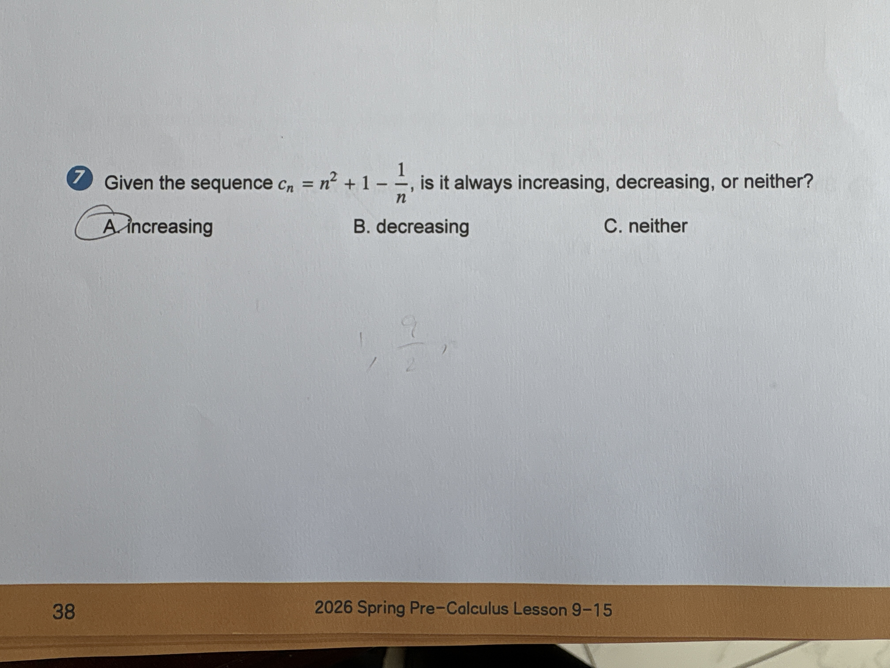

Algebra Quadratic & Polynomial Functions

7 Given the sequence $c_n = n^2 + 1 - \frac{1}{n}$, is it always increasing, decreasing, or neither? A. increasing B. decreasing C. neither
A. increasing
A. increasing
To determine if a sequence is increasing, we check if each term is greater than the previous one ($c_{n+1} > c_n$ for all $n \ge 1$). 1. First, calculate the first few terms of the sequence by substituting $n = 1, 2, 3$: - For $n=1$: $c_1 = 1^2 + 1 - \frac{1}{1} = 1 + 1 - 1 = 1$ - For $n=2$: $c_2 = 2^2 + 1 - \frac{1}{2} = 4 + 1 - 0.5 = 4.5$ - For $n=3$: $c_3 = 3^2 + 1 - \frac{1}{3} = 9 + 1 - 0.33\dots = 9.67$ 2. By comparing these values, we see that $1 < 4.5 < 9.67$. This shows the terms are getting larger. 3. Looking at the formula $c_n = n^2 + 1 - \frac{1}{n}$, as $n$ gets bigger, the $n^2$ part grows very fast. Additionally, the term $-\frac{1}{n}$ gets closer to zero as $n$ increases, which means it is also adding a small increasing amount to the total. Since both parts of the expression increase as $n$ increases, the entire sequence is always increasing. Therefore, the correct answer is A.